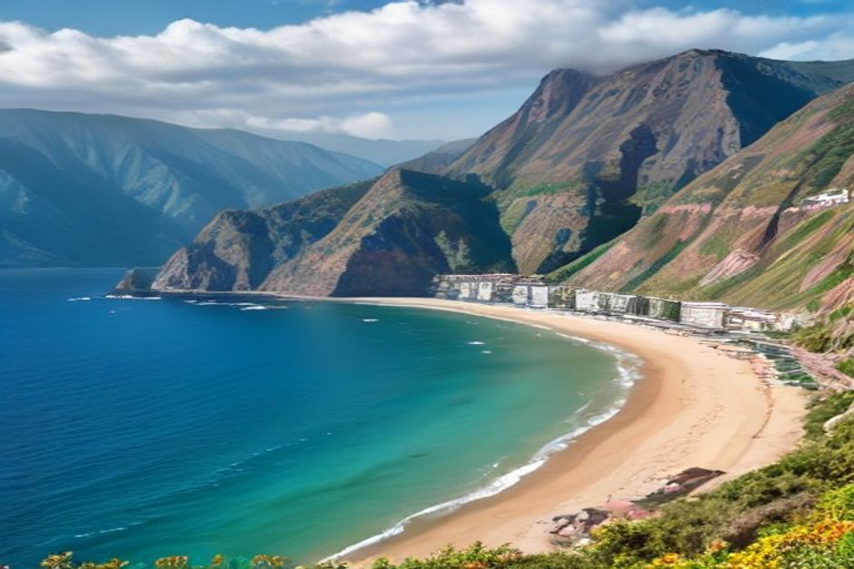
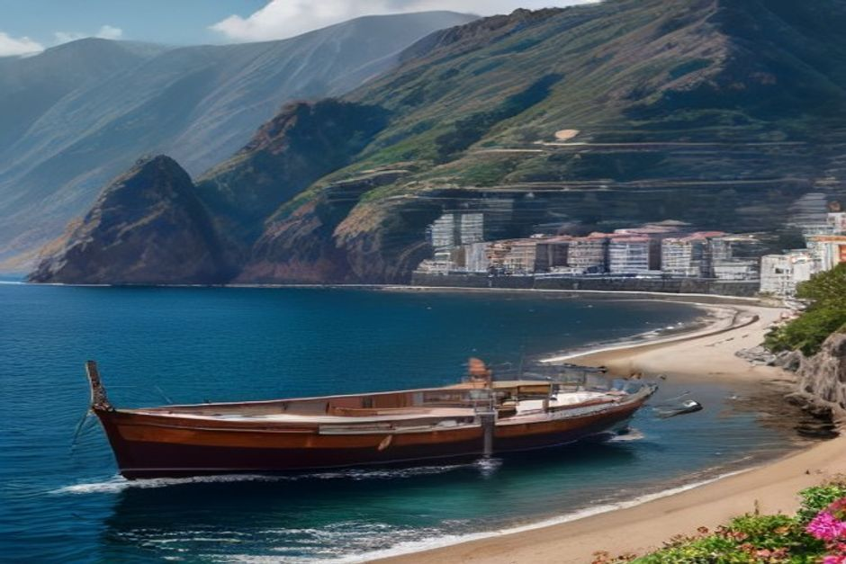

Most visitors driving the south coast slow down for Ribeira Brava or Calheta and blink straight past Ponta do Sol in between — a mistake, since it's one of the prettiest stretches of the whole route and the furthest point west on Chifbay's longer Day Trip. Here's what the village is actually worth stopping for.
Where is Ponta do Sol, and how do you get there?
Ponta do Sol sits on Madeira's southwest coast, about 25 kilometres — a 35-minute drive — west of Funchal along the VE4 expressway, roughly ten minutes past Ribeira Brava. The old coastal road drops down through banana terraces into the valley itself, past a short road tunnel, and lands you on a palm-lined promenade facing the sea. By boat, it's further still: the last stop on Chifbay's route before turning back for Funchal, reached only on the extended 3-hour Day Trip after Câmara de Lobos, Cabo Girão and the swim stops at Fajã dos Padres and Ribeira Brava.

Why is it called "Point of the Sun"?
Because it's the sunniest stretch of the island, and the name is a literal description rather than a marketing line. The valley faces almost due south and is shielded from the cloud that regularly builds over the central mountains and settles on the north coast, so Ponta do Sol keeps clear skies more consistently than most of Madeira. For centuries that sun powered a sugarcane economy — the terraces climbing the valley walls are the leftover evidence — and in the late 19th and early 20th centuries the village was prosperous enough to run its own newspapers and cinemas, an outsized cultural footprint for a place this size.
What is the 1849 pier actually for?
It was built as working infrastructure, not a viewpoint. Designed by the engineer and captain Tibério Augusto Blanc and inaugurated on 9 September 1849, the Cais da Ponta do Sol — later nicknamed the Duke of Luxembourg Pier after a visiting donor — was how sugarcane, bananas and wine left the village for Funchal before any coastal road connected the south side of the island. Built from regional basalt and pebble in a single wide stone arch, it carried that trade for over a century before the road network made it redundant. It still anchors the whole waterfront view today, and it's the one landmark that reads the same from the promenade as it does from a boat offshore.

Can you swim at Ponta do Sol?
Yes, and it's one of the better village beaches on this coast for it. A pebble beach runs for over 150 metres along the waterfront promenade, backed by pastel-coloured houses and closed off by a breakwater that keeps the swell down — there are changing rooms right on the front, which makes it more practical than the rocky coves further along the south coast. It's still open Atlantic water rather than a lagoon, so it swims better on a calm day than a windy one, but for a village stop it's genuinely usable rather than purely decorative.
What else is worth seeing in the village?
The Igreja de Nossa Senhora da Luz, built in the late 15th century, is one of the oldest churches on the island and sits just back from the seafront. Behind it, terraces of bananas climb the steep valley walls on both sides — Ponta do Sol is one of the south coast's main banana-growing parishes, and the terracing is easiest to appreciate from a distance, either from the road above or from the water looking back at the village. The promenade itself, lined with palms and small cafés, is built for slow walking rather than sightseeing on a schedule — there's no single must-see beyond the pier, the church and the beach, which is part of why it rewards an unhurried stop rather than a quick photo and drive on.
Is Ponta do Sol included on a boat trip from Funchal?
Only if you book the longer option. Chifbay's Day Trip runs 2h30 for €500 with swim stops at Fajã dos Padres and Ribeira Brava, or 3 hours for €600 continuing past Ribeira Brava to Ponta do Sol with a filmed video of the day — the extra half hour is really about seeing more coastline and coming home with more than phone photos. The Sunset Trip, which departs at 18:00 and skips swimming because the water is too cold by then, turns back earlier still, at either Cabo Girão or Ribeira Brava, and doesn't reach Ponta do Sol at all.
When is the best time to visit?
Given its reputation as the sunniest village on the island, any season works reasonably well, though the calmest sea and clearest light both favour late morning to mid-afternoon. From the water, Ponta do Sol only comes into view toward the end of the 3-hour Day Trip, so the light on the terraces and the pier tends to be soft, late-afternoon gold by the time the boat turns for home.
Whether you reach it by road or by sea, Ponta do Sol rewards the extra ten minutes past Ribeira Brava — a working pier, a real beach, and the best sun on the island, without the crowds that gather further along the coast.
Frequently asked questions
How far is Ponta do Sol from Funchal?
About 25 kilometres, roughly a 35-minute drive along the VE4, ten minutes past Ribeira Brava — or the last stop by sea on Chifbay's 3-hour Day Trip.
Why is Ponta do Sol called the sunniest place in Madeira?
Its south-facing valley is sheltered from the cloud that regularly gathers over the central mountains and north coast, giving it more consistent sun than most of the island.
Can you swim at Ponta do Sol beach?
Yes — a pebble beach over 150 metres long, calmed by a breakwater, with changing rooms on the promenade.
When was the Ponta do Sol pier built?
1849, designed by engineer Tibério Augusto Blanc, originally for shipping sugarcane, bananas and wine to Funchal.
Is Ponta do Sol included in Chifbay's boat trips?
Only on the 3-hour Day Trip extension; the base 2h30 Day Trip and the Sunset Trip turn back earlier along the coast.